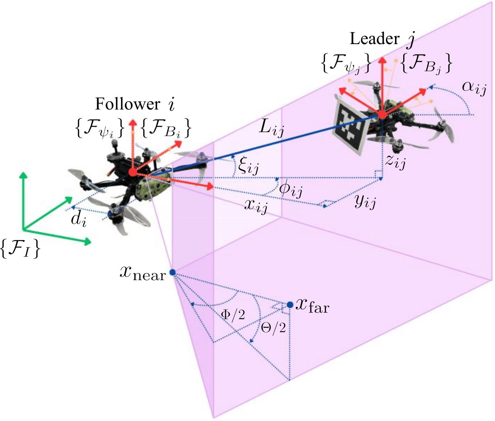
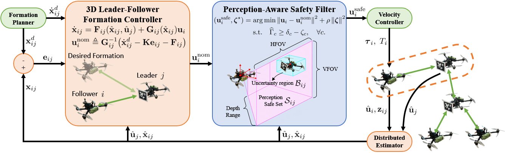
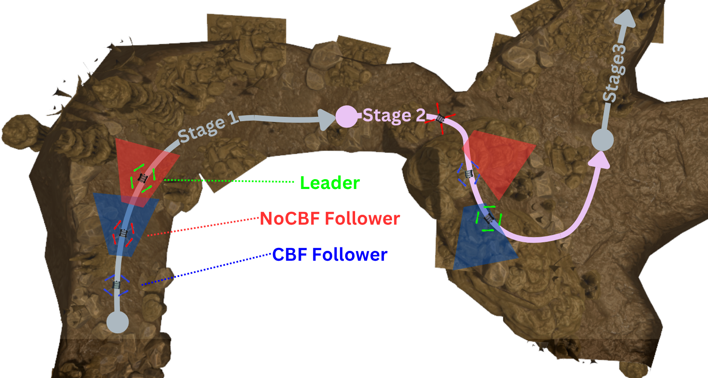
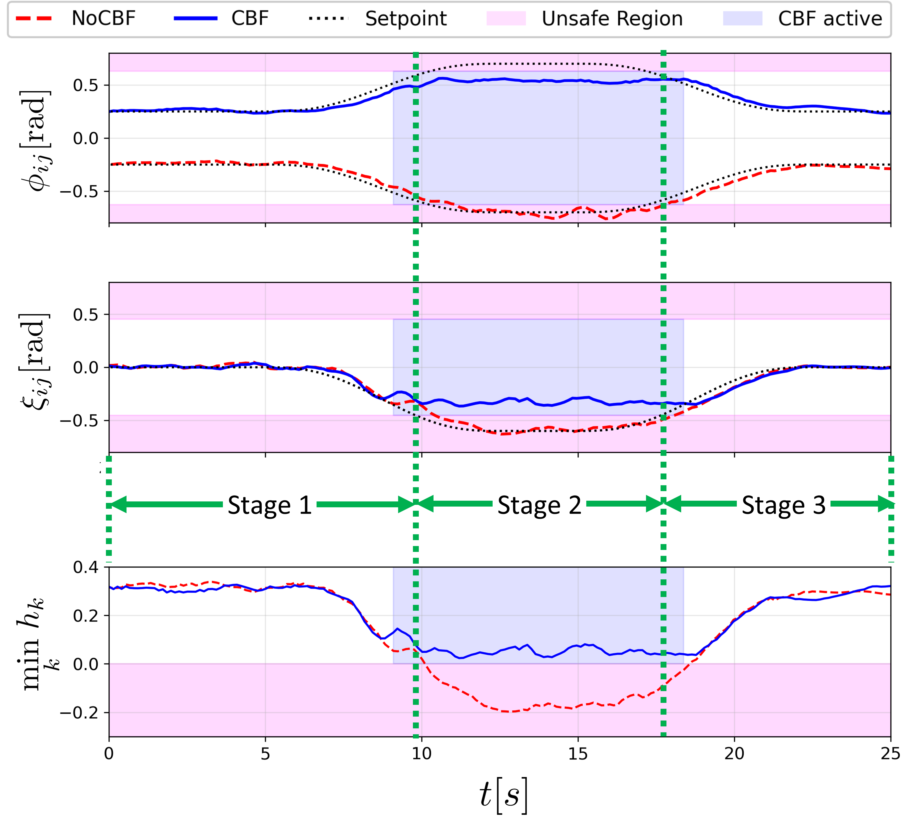

Overview of the proposed framework: followers track time-varying 3D formations from onboard AprilTag feedback while an estimation-aware CBF-QP keeps the leader inside the camera frustum.
Abstract
Vision-based leader-follower formation control requires tracking formations while preserving visual feedback despite coupled UAV motion, limited camera visibility, and delayed measurements. This letter presents a distributed perception-aware 3D leader-follower formation (3D-LFF) framework for multi-UAV systems. We derive relative 3D kinematics that explicitly account for the follower's full attitude and both UAVs' motion. A distributed controller based on feedback linearization uses these kinematics and communicated leader motion to track time-varying formations. The controller receives relative-state feedback from an asynchronous EKF, which incorporates delayed AprilTag measurements at their acquisition times and propagates the corrected estimate to the current control time. To preserve visual feedback, an estimation-aware control barrier function (CBF)-QP safety filter minimally modifies the controller's commands to enforce horizontal and vertical camera Field-of-View (FOV) and sensing-depth limits. Hardware experiments demonstrate 36.7–54.2% lower formation-tracking RMSE than a visual-servoing baseline. Under safety-conflicting formation references, the estimation-aware CBF preserves leader visibility, whereas both the standard CBF without uncertainty margins and the unfiltered baseline lose visibility. Gazebo simulations demonstrate distributed operation with 21 UAVs.
Introduction and System Formulation
In GPS-denied environments, followers must estimate the leader's relative state using onboard sensing. With a body-fixed camera, the leader must stay within the camera's limited field of view and sensing depth, yet the motion and attitude of both UAVs continuously change their camera-relative geometry. Aggressive maneuvers or desired formation changes can therefore drive the leader out of the camera frustum and eliminate the relative-state feedback the controller depends on.
Our framework models this geometry with augmented 3D line-of-sight coordinates (range, azimuth, elevation, and relative heading) that retain the follower's full attitude and camera offset and incorporate both UAVs' motion. The same representation supports the distributed tracking controller, the asynchronous state estimator, and the camera-frustum safety constraints.

Leader–follower relative geometry and camera frustum. The leader position \( \mathbf{q}_{ij} \) is represented by range \( L_{ij} \), azimuth \( \phi_{ij} \), elevation \( \xi_{ij} \), and relative heading \( \alpha_{ij} \). The camera frustum is defined by FOV angles \( (\Phi, \Theta) \) and depth limits \( [x_{\mathrm{near}}, x_{\mathrm{far}}] \).
Key Contributions
3D Kinematic Model & Control
Relative 3D kinematics that account for the follower's full attitude, camera offset, and both UAVs' motion, enabling a feedback-linearization controller that tracks time-varying formations using communicated leader motion.
Estimation-Aware Safety
An asynchronous EKF fuses delayed AprilTag measurements, and a CBF-QP safety filter with an uncertainty margin derived from the estimator covariance enforces the FOV and depth limits under estimation error.
Experimental Validation
Onboard ModalAI Seeker experiments show 36.7–54.2% lower tracking RMSE than IBVS and preserved visibility under conflicting references, and a Gazebo simulation demonstrates 21-UAV distributed operation.
Methodology

Perception-aware 3D-LFF control architecture. A distributed 3D-LFF formation controller tracks the desired state \( \mathbf{x}_{ij}^{d}(t) \) to generate the nominal command \( \mathbf{u}_{i}^{\mathrm{nom}} \). An estimation-aware safety filter modifies \( \mathbf{u}_{i}^{\mathrm{nom}} \) to enforce camera-frustum constraints \( \Gamma_c \) via a CBF-QP, outputting the safe command \( \mathbf{u}_{i}^{\mathrm{safe}} \) that keeps the leader inside the perception safe set \( \mathcal{S}_{ij}^{\mathbf{q}} \). A low-level velocity controller then tracks \( \mathbf{u}_{i}^{\mathrm{safe}} \) for the full quadrotor dynamics, with relative-state feedback from a distributed estimator.
The framework employs a hierarchical architecture: an outer loop generates safe velocity and yaw-rate commands that an inner-loop velocity controller tracks on the full-order dynamics. A distributed controller based on feedback linearization uses the relative 3D kinematics, local ego states, and communicated leader motion to produce a nominal command. Relative-state feedback comes from an asynchronous EKF that applies delayed, low-rate AprilTag measurements at their acquisition times and replays the corrected estimate to the current control time.
The nominal command is then passed through an estimation-aware CBF-QP. Each camera-frustum constraint (horizontal and vertical FOV, near and far depth) is tightened by a margin computed from the estimator's uncertainty, so visibility is preserved even though the safety filter acts on estimated rather than true states.
Experiments
We evaluate the framework in a Gazebo simulation of distributed formation control and in hardware experiments on ModalAI Seeker quadrotors (onboard Snapdragon 821, PX4 velocity control). AprilTag measurements arrive at 10 Hz from 640×480 images, with camera FOV angles of 56° and 42° and depth limits of 0.5–1.5 m. OptiTrack provides ground truth for evaluation only.
The numerical and CrazySim studies use one leader and two followers: one without the safety filter (NoCBF) and one with it (CBF). The evaluation task is a three-stage task: Stage 1 is the nominal condition with no safety conflict; Stage 2 introduces a safety-conflicting formation; Stage 3 removes the conflict so the followers converge back to their nominal formation.
Python numerical simulation
To validate our perception-aware framework, we developed a Python-based numerical simulation of a two-level leader-follower drone hierarchy tracking a dynamic Figure-8 trajectory. This simulation directly compares two parallel follower branches: one equipped with our kinematic Control Barrier Function (CBF) safety filter and a baseline branch operating without it. By driving the formation through three distinct phases—a conservative initial state, an aggressive stage that intentionally issues commands outside the Field of View (FOV) boundaries, and a final recovery phase—the results clearly demonstrate the necessity of our approach. While the baseline No-CBF drones blindly follow geometric commands and suffer complete visibility loss during the aggressive maneuvers, the CBF-equipped drones seamlessly activate their safety filters, dynamically adjusting their velocities to keep their respective leaders safely locked inside the camera frame.
Python numerical simulation of the two-level setup through Stage 1 → Stage 2 (no recovery). The CBF pair (filter on) keeps the leader within the perception safe set; the NoCBF pair does not.
Gazebo Simulation (CrazySim, Crazyflie)

One leader (green) and two followers navigating a confined cave environment in Gazebo.
Utilizing the CrazySim framework, the multi-UAV team navigates a confined cave environment, simulating a GPS-denied setting that requires strict vision-based coordination. The terrain is designed to naturally trigger the test scenario: an open chamber allows the team to expand their nominal formation, introducing the safety-conflicting formation evaluated in Stage 2.
Gazebo simulation of the three-stage task.

Quantitative results: the CBF-equipped follower (blue) maintains its 3D-LFF states within the perception safe region throughout the conflict, whereas the NoCBF baseline (red) violates the FOV constraints.
During Stage 2, the formation expansion introduces a conflict between formation and perception safety objectives. The proposed CBF-QP framework dynamically prioritizes safety, intervening to ensure the leader remains strictly within the perception safe set. The NoCBF baseline fails to adapt, resulting in severe safety violations. In Stage 3, the conflict is removed, and both followers are able to converge to their nominal formation objectives.
Gazebo Simulation: 21 UAVs
We simulate 21 X500 quadrotors in Gazebo with PX4 SITL: one root leader and 20 followers arranged in three hierarchical tiers of 4, 8, and 8 UAVs. The root leader flies a lemniscate at 1.5 m/s while the formation continuously expands, contracts, and rotates into a dynamic conical configuration. Each follower tracks its immediate parent using only the derived relative kinematics and communicated parent motion. Tracking RMSE grows from 0.53 m in Tier 1 to 1.39 m in Tier 3, yet the formation remains coherent throughout. Without the CBF, nominal tracking drives the parent outside a follower's vertical FOV; with the CBF, the follower modifies its command to preserve visibility.
Gazebo simulation with 21 UAVs in three hierarchical tiers (top-down view).
Hardware: Estimation and Tracking
In a 3D triangular maneuver with one leader and one follower, the asynchronous EKF reduces the estimation RMSE of range, azimuth, elevation, and relative heading by 12.5%, 65.6%, 38.9%, and 32.5% relative to raw AprilTag measurements, compensating delay and correcting the drift of pure model propagation. We then compare against a perception-aware IBVS baseline at 20 Hz. Omitting leader motion already cuts tracking RMSE by 14.2–32.8%; incorporating communicated leader motion reduces RMSE by 42.0%, 54.2%, 36.7%, and 43.0% across the four relative states. The 95th-percentile computation time is 0.832 ms versus 11.770 ms for IBVS (a 92.9% reduction), and IBVS fails during rapid catch-up after accumulating tracking lag.
Hardware formation-tracking experiment on ModalAI Seeker quadrotors.
Hardware: Perception Safety
A yaw-modulated double-lemniscate maneuver with one leader and two followers in a V-shaped formation tests perception safety through a three-stage task that introduces and then removes a conflict with the horizontal and vertical FOV constraints. We compare three configurations that share the same estimator, nominal controller, and QP parameters: NoCBF, a standard CBF (no uncertainty margin), and the estimation-aware CBF. As the desired formation approaches the vertical FOV boundary, both NoCBF and the standard CBF violate the constraint and lose the leader. The estimation-aware CBF keeps its barrier values nonnegative and the leader visible throughout, with all slack variables remaining at zero, and nominal tracking resumes once the reference returns to the admissible region.
Perception-safety experiment: NoCBF, standard CBF, and estimation-aware CBF under a safety-conflicting formation reference.
The uncertainty margin also upper-bounds the barrier-value estimation error measured against OptiTrack across all evaluated samples. Its peaks follow increases in the EKF covariance and it contracts as the covariance decreases, providing adaptive constraint tightening rather than a fixed angular cushion.
Conclusion
Visibility Under Uncertainty
The estimation-aware CBF-QP preserved leader visibility during yaw-modulated, safety-conflicting maneuvers, whereas the standard CBF and NoCBF lost visibility.
Accurate, Efficient Tracking
The distributed controller with the asynchronous EKF reduced tracking RMSE and computation time compared with IBVS, and scaled to 21 UAVs in simulation.
BibTeX
@article{santjoko2026frustumsafe3dlff,
author = {Santjoko, Immanuel R. and Suganda, Richie R. and Pan, Miao and Hu, Bin},
title = {Dynamic Relative-Motion and Frustum-Safe Tracking
for Distributed 3D UAV Formations},
journal = {Under Review},
year = {2026},
}